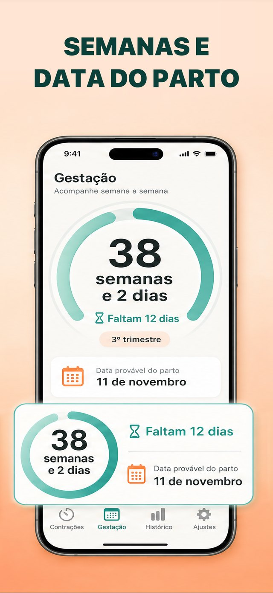
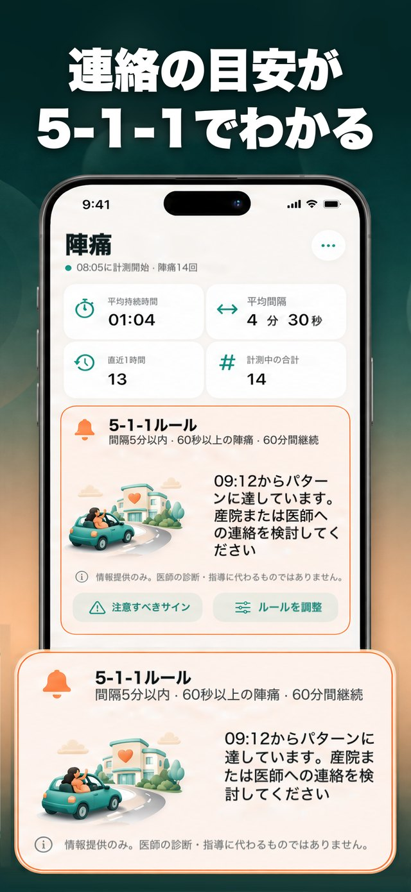
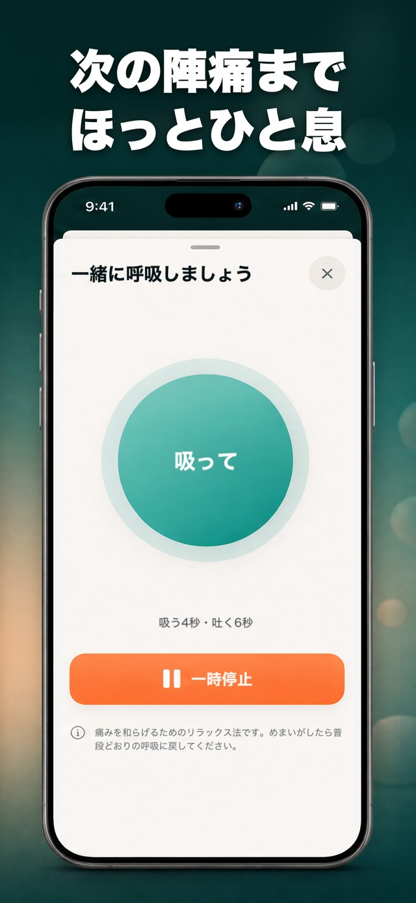
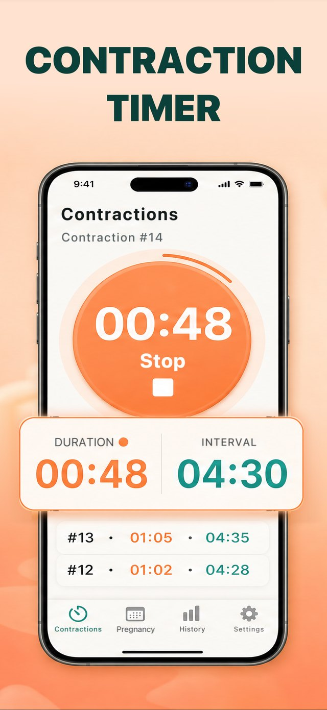
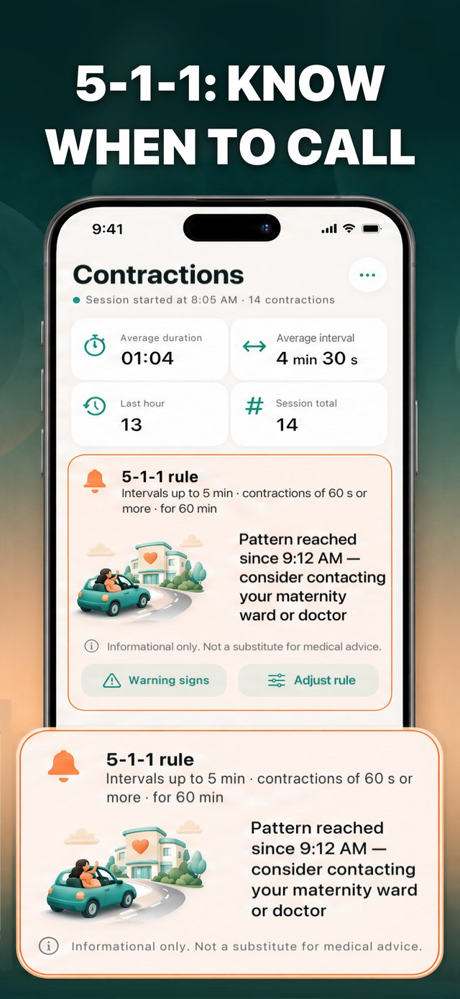
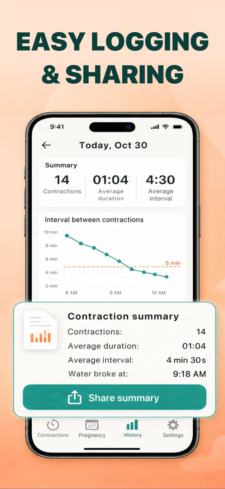
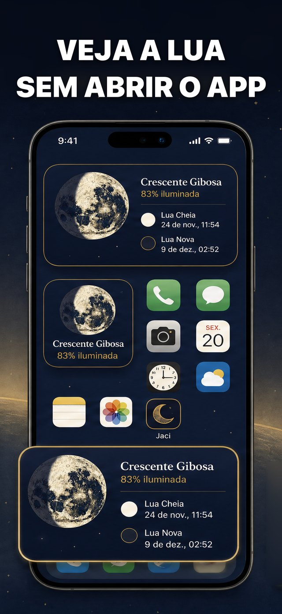
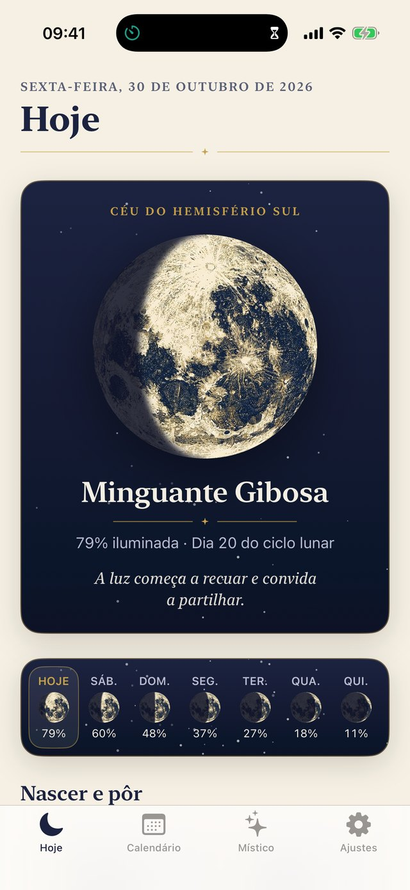
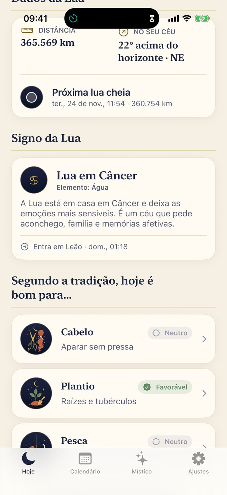
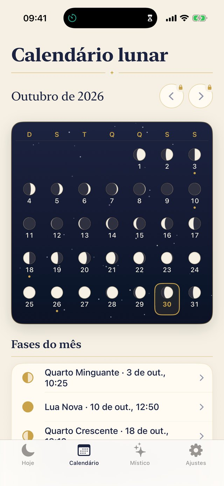

estado lido da ASC em 2026-11-18 17:08 · abrir ASC
Testes A/B
Em desenvolvimento (0)
Esperando seu OK (2)
A — Contador · hora de ir pra maternidade · semanas e DPP · bolsa estourou · histórico pro médico



A · ja — amostra traduzida





A · en-US — amostra traduzida





A — O almanaque da Lua — a lua do seu céu + cabelo, plantio e pesca + calendário



Telas reais (base) — capturas do simulador, pt-BR, 30/10





Aguardando a Apple / Start (0)
Rodando agora (16)
Nenhum no ar
163 downloads na janela · 5/dia · ▼ -13% tendência · US$ 52/mês · veredito WATCH
tráfego 50%Linha de baseImpressões únicas709Conversão6,31%4,89 a 7,95%Melhora—Confiança—
Coletando dadosImpressões únicas211Conversão5,40%3,21 a 8,37%Melhora−14,31%−52,17 a +39,73%Confiança0,1%
Coletando dadosImpressões únicas231Conversão6,07%3,74 a 9,15%Melhora−3,77%−42,39 a +54,11%Confiança0%
Coletando dadosImpressões únicas230Conversão7,16%4,48 a 10,64%Melhora+13,49%−32,29 a +77,05%Confiança0,3%
Outra linha de base (menu da ASC)
vs azul minimalista: Original +16,69% (conf 0,1%) · claro colorido +12,29% (conf 0%) · escuro cidade +32,43% (conf 0,4%)
vs claro colorido: Original +3,92% (conf 0%) · azul minimalista −10,94% (conf 0%) · escuro cidade +17,94% (conf 0,1%)
vs escuro cidade: Original −11,88% (conf 0,3%) · azul minimalista −24,49% (conf 0,4%) · claro colorido −15,21% (conf 0,1%)
escuro cidade


claro colorido


azul minimalista


546 downloads na janela · 18/dia · ▼ -6% tendência · US$ 70/mês · veredito WATCH
tráfego 75%Linha de baseImpressões únicas862Conversão8,38%6,94 a 9,99%Melhora—Confiança—
Coletando dadosImpressões únicas918Conversão9,28%7,75 a 10,99%Melhora+10,77%−12,89 a +43,07%Confiança1,3%
Coletando dadosImpressões únicas898Conversão8,78%7,31 a 10,42%Melhora+4,76%−18,38 a +34,61%Confiança0,2%
Coletando dadosImpressões únicas939Conversão9,18%7,68 a 10,84%Melhora+9,49%−14,60 a +41,88%Confiança0,9%
Outra linha de base (menu da ASC)
vs A: Original −9,73% (conf 1,3%) · B −5,43% (conf 0,5%) · C −1,16% (conf 0,1%)
vs B: Original −4,54% (conf 0,2%) · A +5,74% (conf 0,5%) · C +4,52% (conf 0,4%)
vs C: Original −8,67% (conf 0,9%) · A +1,17% (conf 0,1%) · B −4,32% (conf 0,4%)
Treatment A (Estilo de vida claro)


Treatment B (Ilustracao escura)


Treatment C (Cartoes gigantes)


82 downloads na janela · 3/dia · ▼ -26% tendência · US$ 0/mês · veredito KILL
tráfego 75%Linha de baseImpressões únicas565Conversão1,84%1,00 a 3,04%Melhora—Confiança—
Coletando dadosImpressões únicas583Conversão2,15%1,21 a 3,47%Melhora+16,88%−43,79 a +157,55%Confiança0%
Coletando dadosImpressões únicas573Conversão1,40%0,75 a 2,34%Melhora−23,75%−65,38 a +66,64%Confiança0%
Coletando dadosImpressões únicas534Conversão1,80%0,95 a 3,03%Melhora−2,22%−54,23 a +125,47%Confiança0%
Outra linha de base (menu da ASC)
vs A: Original −14,44% (conf 0%) · B −34,76% (conf 0,4%) · F −16,34% (conf 0%)
vs B: Original +31,14% (conf 0%) · A +53,28% (conf 0,4%) · F +28,23% (conf 0%)
vs F: Original +2,27% (conf 0%) · A +19,54% (conf 0%) · B −22,01% (conf 0%)
Treatment A (Neon Purple)


Treatment B (Aurora)


Treatment F (Minimal)


157 downloads na janela · 5/dia · ▼ -24% tendência · US$ 65/mês · veredito WATCH
tráfego 75%Linha de baseImpressões únicas335Conversão6,08%4,05 a 8,64%Melhora—Confiança—
Coletando dadosImpressões únicas365Conversão6,50%4,44 a 9,06%Melhora+6,92%−36,02 a +73,89%Confiança0%
Coletando dadosImpressões únicas311Conversão4,89%3,17 a 7,12%Melhora−19,53%−54,40 a +35,87%Confiança0,2%
Coletando dadosImpressões únicas360Conversão5,31%3,57 a 7,50%Melhora−12,65%−48,98 a +42,69%Confiança0,1%
Outra linha de base (menu da ASC)
vs A: Original −6,48% (conf 0%) · B −24,74% (conf 0,8%) · C −18,30% (conf 0,3%)
vs B: Original +24,27% (conf 0,2%) · A +32,87% (conf 0,8%) · C +8,55% (conf 0%)
vs C: Original +14,48% (conf 0,1%) · A +22,40% (conf 0,3%) · B −7,88% (conf 0%)
Treatment A (Light clean)


Treatment B (Dark sloth)


Treatment C (Sloth story)


143 downloads na janela · 5/dia · ▼ -21% tendência · US$ 0/mês · veredito WATCH
tráfego 75%Linha de baseImpressões únicas432Conversão5,73%4,05 a 7,79%Melhora—Confiança—
Coletando dadosImpressões únicas433Conversão6,18%4,39 a 8,37%Melhora+7,89%−31,58 a +65,49%Confiança0,1%
Coletando dadosImpressões únicas448Conversão5,30%3,77 a 7,17%Melhora−7,46%−41,90 a +42,97%Confiança0,1%
Coletando dadosImpressões únicas442Conversão6,68%4,79 a 8,98%Melhora+16,59%−26,42 a +77,33%Confiança0,4%
Outra linha de base (menu da ASC)
vs A: Original −7,31% (conf 0,1%) · B −14,22% (conf 0,3%) · C +8,06% (conf 0,1%)
vs B: Original +8,06% (conf 0,1%) · A +16,58% (conf 0,3%) · C +25,98% (conf 1,2%)
vs C: Original −14,23% (conf 0,4%) · A −7,46% (conf 0,1%) · B −20,62% (conf 1,2%)
Treatment A (Sueca no bolso)


Treatment B (Perguntas que fazem rir)


Treatment C (Desafios 10 segundos)


171 downloads na janela · 6/dia · ▲ +6% tendência · US$ 0/mês · veredito WATCH
tráfego 75%Linha de baseImpressões únicas494Conversão2,52%1,50 a 3,92%Melhora—Confiança—
Coletando dadosImpressões únicas511Conversão5,20%3,61 a 7,16%Melhora+105,86%+20,19 a +289,10%Confiança53,7%
Coletando dadosImpressões únicas476Conversão3,32%2,10 a 4,94%Melhora+31,70%−27,94 a +156,59%Confiança0,3%
Coletando dadosImpressões únicas443Conversão2,38%1,34 a 3,84%Melhora−5,64%−53,80 a +87,99%Confiança0%
Outra linha de base (menu da ASC)
vs A: Original −51,42% (conf 53,7%) · B −36,02% (conf 5,1%) · C −54,16% (conf 61,1%)
vs B: Original −24,07% (conf 0,3%) · A +56,31% (conf 5,1%) · C −28,35% (conf 0,4%)
vs C: Original +5,98% (conf 0%) · A +118,17% (conf 61,1%) · B +39,58% (conf 0,4%)
Treatment A (Bolso e alarme)


Treatment B (Tranquilidade)


Treatment C (Controle)


4.510 downloads na janela · 150/dia · → +4% tendência · US$ 1.049/mês · veredito SCALE
tráfego 66%Linha de baseImpressões únicas10.331Conversão6,16%5,78 a 6,56%Melhora—Confiança—
Coletando dadosImpressões únicas9.908Conversão6,09%5,70 a 6,49%Melhora−1,22%−10,10 a +7,79%Confiança0,3%
Coletando dadosImpressões únicas9.945Conversão6,18%5,79 a 6,58%Melhora+0,23%−8,40 a +9,61%Confiança0,2%
Outra linha de base (menu da ASC)
vs A: Original +1,23% (conf 0,3%) · B +1,47% (conf 0,5%)
vs B: Original −0,23% (conf 0,2%) · A −1,45% (conf 0,5%)
Treatment A (Telas traduzidas)


Treatment B (Light mode)


306 downloads na janela · 10/dia · ▼ -5% tendência · US$ 68/mês · veredito SCALE
tráfego 75%Linha de baseImpressões únicas324Conversão10,20%7,58 a 13,28%Melhora—Confiança—
Coletando dadosImpressões únicas318Conversão9,98%7,39 a 13,04%Melhora−2,12%−34,60 a +44,58%Confiança0,1%
Coletando dadosImpressões únicas302Conversão9,58%7,02 a 12,63%Melhora−6,03%−36,16 a +41,74%Confiança0,1%
Coletando dadosImpressões únicas306Conversão10,17%7,49 a 13,35%Melhora−0,23%−32,80 a +48,19%Confiança0,2%
Outra linha de base (menu da ASC)
vs A: Original +2,17% (conf 0,1%) · B −3,99% (conf 0%) · C +1,93% (conf 0,1%)
vs B: Original +6,42% (conf 0,1%) · A +4,16% (conf 0%) · C +6,17% (conf 0,1%)
vs C: Original +0,23% (conf 0,2%) · A −1,90% (conf 0,1%) · B −5,81% (conf 0,1%)
Treatment A (Guia de cortes)


Treatment B (Diário e reações)


Treatment C (Variedade por fase)


57 downloads na janela · 2/dia · ▼ -42% tendência · US$ 0/mês · veredito KILL
tráfego 75%Linha de baseImpressões únicas83Conversão4,92%1,70 a 10,61%Melhora—Confiança—
Coletando dadosImpressões únicas82Conversão4,94%1,70 a 10,70%Melhora+0,44%−71,77 a +289,80%Confiança0%
Coletando dadosImpressões únicas87Conversão5,97%2,30 a 12,07%Melhora+21,20%−64,11 a +327,34%Confiança0%
Coletando dadosImpressões únicas70Conversão5,95%1,95 a 13,14%Melhora+20,93%−68,14 a +361,97%Confiança0%
Outra linha de base (menu da ASC)
vs A: Original −0,44% (conf 0%) · B +20,67% (conf 0%) · C +20,40% (conf 0%)
vs B: Original −17,49% (conf 0%) · A −17,13% (conf 0%) · C −0,23% (conf 0%)
vs C: Original −17,30% (conf 0%) · A −16,94% (conf 0%) · B +0,23% (conf 0%)
Treatment A (Frase do dia)


Treatment B (Frase certa)


Treatment C (Arte atual traduzida)


120 downloads na janela · 4/dia · ▼ -10% tendência · US$ 0/mês · veredito WATCH
tráfego 75%Linha de baseImpressões únicas267Conversão4,22%2,43 a 6,69%Melhora—Confiança—
Coletando dadosImpressões únicas242Conversão4,21%2,34 a 6,85%Melhora−0,21%−53,45 a +94,67%Confiança0%
Coletando dadosImpressões únicas269Conversão4,21%2,43 a 6,66%Melhora−0,33%−52,69 a +95,11%Confiança0%
Coletando dadosImpressões únicas268Conversão5,14%3,03 a 7,99%Melhora+21,60%−39,11 a +136,36%Confiança0%
Outra linha de base (menu da ASC)
vs A: Original +0,21% (conf 0%) · B −0,12% (conf 0%) · C +21,86% (conf 0%)
vs B: Original +0,33% (conf 0%) · A +0,12% (conf 0%) · C +22,01% (conf 0%)
vs C: Original −17,77% (conf 0%) · A −17,94% (conf 0%) · B −18,04% (conf 0%)
Treatment A (Placar)


Treatment B (Regras)


Treatment C (Mesa)


172 downloads na janela · 6/dia · ▲ +7% tendência · US$ 82/mês · veredito WATCH
tráfego 75%Linha de baseImpressões únicas329Conversão5,98%3,93 a 8,60%Melhora—Confiança—
Coletando dadosImpressões únicas266Conversão5,25%3,22 a 7,95%Melhora−12,21%−51,02 a +57,66%Confiança0,1%
Coletando dadosImpressões únicas286Conversão5,43%3,41 a 8,07%Melhora−9,32%−47,97 a +63,13%Confiança0%
Coletando dadosImpressões únicas272Conversão4,84%2,97 a 7,32%Melhora−19,16%−56,13 a +41,66%Confiança0,2%
Outra linha de base (menu da ASC)
vs A: Original +13,90% (conf 0,1%) · B +3,29% (conf 0%) · C −7,92% (conf 0%)
vs B: Original +10,27% (conf 0%) · A −3,19% (conf 0%) · C −10,85% (conf 0%)
vs C: Original +23,70% (conf 0,2%) · A +8,60% (conf 0%) · B +12,18% (conf 0%)
Treatment A (Arte atual mais nova)


Treatment B (Panorama B)


Treatment C (Panorama C fundo preto)


3.199 downloads na janela · 107/dia · ▲ +6% tendência · US$ 930/mês · veredito SCALE
tráfego 75%Linha de baseImpressões únicas3.044Conversão11,43%10,50 a 12,40%Melhora—Confiança—
Coletando dadosImpressões únicas3.134Conversão11,76%10,83 a 12,73%Melhora+2,93%−8,07 a +16,25%Confiança0,5%
Coletando dadosImpressões únicas3.134Conversão10,73%9,85 a 11,65%Melhora−6,09%−16,12 a +6,01%Confiança2,5%
Coletando dadosImpressões únicas3.169Conversão12,41%11,45 a 13,41%Melhora+8,60%−3,12 a +21,85%Confiança15%
Outra linha de base (menu da ASC)
vs A: Original −2,84% (conf 0,5%) · B −8,76% (conf 8,1%) · C +5,51% (conf 5,4%)
vs B: Original +6,48% (conf 2,5%) · A +9,60% (conf 8,1%) · C +15,63% (conf 75,3%)
vs C: Original −7,92% (conf 15%) · A −5,22% (conf 5,4%) · B −13,52% (conf 75,3%)
Treatment A (Arte atual elevada)


Treatment B (Icone 1)


Treatment C (Icone 1)


233 downloads na janela · 8/dia · ▼ -7% tendência · US$ 15/mês · veredito WATCH
tráfego 75%Linha de baseImpressões únicas261Conversão7,73%5,16 a 10,97%Melhora—Confiança—
Coletando dadosImpressões únicas256Conversão6,65%4,37 a 9,56%Melhora−13,99%−48,73 a +49,41%Confiança0,1%
Coletando dadosImpressões únicas296Conversão7,59%5,20 a 10,56%Melhora−1,86%−41,58 a +63,61%Confiança0%
Coletando dadosImpressões únicas268Conversão6,70%4,45 a 9,55%Melhora−13,32%−48,76 a +47,38%Confiança0,1%
Outra linha de base (menu da ASC)
vs A: Original +16,27% (conf 0,1%) · B +14,10% (conf 0,1%) · C +0,78% (conf 0%)
vs B: Original +1,90% (conf 0%) · A −12,36% (conf 0,1%) · C −11,68% (conf 0,2%)
vs C: Original +15,37% (conf 0,1%) · A −0,77% (conf 0%) · B +13,22% (conf 0,2%)
Treatment A (Widget e meta)


Treatment B (Celebre cada meta)


Treatment C (Panorama C)


49 downloads na janela · 2/dia · ▲ +12% tendência · US$ 0/mês · veredito KILL
tráfego 66%Linha de baseImpressões únicas59Conversão5,79%1,63 a 13,78%Melhora—Confiança—
Coletando dadosImpressões únicas46Conversão4,00%0,57 a 12,91%Melhora−30,96%−91,09 a +280,08%Confiança0%
Coletando dadosImpressões únicas53Conversão5,14%1,19 a 13,44%Melhora−11,32%−83,15 a +343,51%Confiança0%
Outra linha de base (menu da ASC)
vs A: Original +44,83% (conf 0%) · C +28,44% (conf 0%)
vs C: Original +12,76% (conf 0%) · A −22,14% (conf 0%)
Treatment A (Frase real com audio)


Treatment C (Claro carreira)


4 downloads na janela · 0/dia · → +0% tendência · US$ 0/mês · veredito KILL
tráfego 75%Linha de baseImpressões únicas7Conversão27,83%2,38 a 75,57%Melhora—Confiança—
Coletando dadosImpressões únicas13Conversão15,63%1,25 a 52,03%Melhora−43,82%−96,41 a +500,87%Confiança1,8%
Coletando dadosImpressões únicas18Conversão10,88%0,85 a 39,21%Melhora−60,91%−98,03 a +343,30%Confiança2,5%
Coletando dadosImpressões únicas10Conversão18,71%1,52 a 59,16%Melhora−32,75%−94,33 a +644,98%Confiança1,9%
Outra linha de base (menu da ASC)
vs A: Original +78,00% (conf 1,8%) · B −30,42% (conf 0%) · C +19,71% (conf 0,1%)
vs B: Original +155,83% (conf 2,5%) · A +43,73% (conf 0%) · C +72,05% (conf 0,1%)
vs C: Original +48,70% (conf 1,9%) · A −16,46% (conf 0,1%) · B −41,88% (conf 0,1%)
Treatment A (Cofre de documentos)


Treatment B (Scanner PDF)


Treatment C (Busca OCR claro)


18 downloads na janela · 1/dia · ▲ +57% tendência · US$ 0/mês · veredito KILL
tráfego 75%Linha de baseImpressões únicas91Conversão1,63%0,12 a 6,86%Melhora—Confiança—
Coletando dadosImpressões únicas79Conversão2,05%0,15 a 8,56%Melhora+25,63%−94,60 a +2359,20%Confiança0%
Coletando dadosImpressões únicas68Conversão2,39%0,18 a 9,91%Melhora+46,33%−91,94 a +2814,05%Confiança0%
Coletando dadosImpressões únicas85Conversão1,75%0,13 a 7,33%Melhora+7,07%−92,81 a +2166,61%Confiança0%
Outra linha de base (menu da ASC)
vs A: Original −20,40% (conf 0%) · B +16,47% (conf 0%) · C −14,77% (conf 0%)
vs B: Original −31,66% (conf 0%) · A −14,14% (conf 0%) · C −26,83% (conf 0%)
vs C: Original −6,61% (conf 0%) · A +17,33% (conf 0%) · B +36,66% (conf 0%)
Treatment A (Titulo da casa)


Treatment B (Sentimento editorial)


Treatment C (Versiculo na tela de bloqueio)